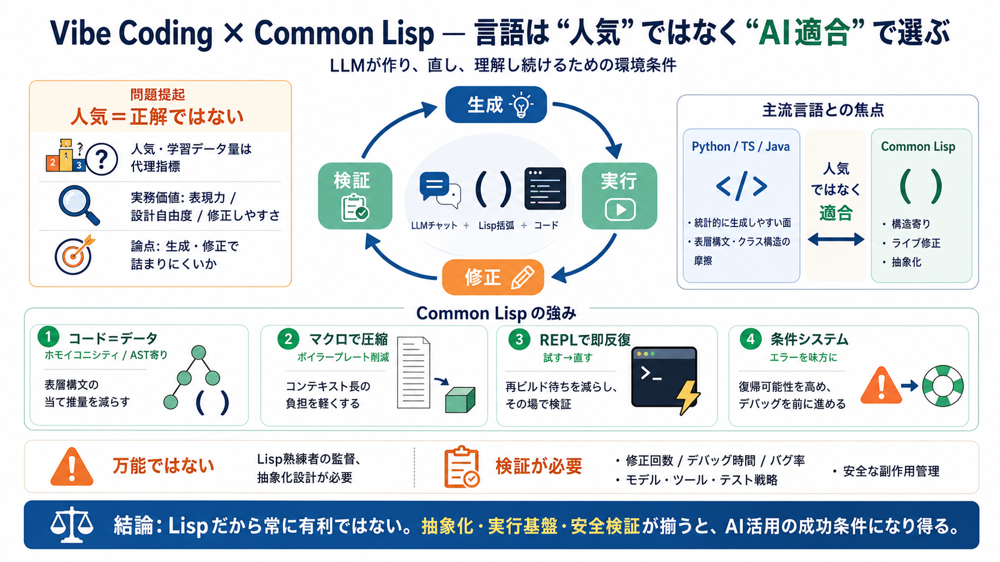

言語は「人気」ではなく「適合」で選ぶ
vibe codingでは、LLMがコードを作り、直し、理解し続けるための「環境条件」が重要です。その観点でCommon Lispは、表現力とAI適合性が噛み合う可能性がある、という主張を整理します。
人気＝正解？
言語選定を「人気度」や「学習データ量」に寄せると、実務の価値（表現力、設計自由度）を見誤りやすい、と批判されています。さらに人気言語は「保守担当が確保しやすい」という管理都合で選ばれがちだ、と指摘します。
AIの摩擦
LLMが困りやすいのは、厳密な記号配置（表層構文）を当てにいく作業です。Lispは「コードをデータとして扱う」設計により、生成対象をより構造寄りにできる、という見立てが核になります。
ホモイコニシティ
ホモイコニシティにより、コードが操作対象としてAST（抽象構文木）のように扱えるため、LLMは細かい表層構文の当て推量を減らせる可能性があります。
コンテキスト節約
マクロはボイラープレートを抽象化し、LLMが毎回長い定型コードを生成しなくて済む形にできます。結果として、vibe codingのボトルネックである「コンテキスト長」を相対的に緩和すると説明されています。
試す→直す
REPLでライブ環境を参照しながら対話的に修正できるため、LLMが生成した不確実性を素早く相殺できます。再ビルドなしで差し替えできる点が、修正サイクルのテンポに直結します。
エラーを味方に
条件（condition）システムにより、エラーを扱う設計が強くなるため、デバッグを進めやすいとされています。LLM生成物は誤りを含みがちなので、エラー処理の枠組みが“復帰可能性”を高めます。
万能ではない
本文は「Lispを深く理解している人が監督する必要がある」と強く前提に置いています。つまり、言語を選ぶだけで自動的に成功する話ではなく、適切な抽象化・実行基盤を設計者が使いこなす点が重要です。
Python/TS/Java？
主流言語は統計的に生成しやすい面がある一方で、表層構文の厳密さやクラス構造などが生成の摩擦になりやすい、と対比されています。論点は「人気」ではなく「AIの生成・修正で詰まりにくいか」です。
vibe codingの流れ
vibe codingでは、生成→実行→修正のループが速いほど価値が出ます。Lispはその反復を、REPL、条件システム、マクロによる抽象化で後押しすると整理されています。
ab initio回避
「状態を保ったまま差し替える」ことで、再ビルドの負担（＝ゼロからやり直しに近いコスト）を避ける点が強調されます。修正テンポが上がるほど、LLMの誤差を吸収しやすくなります。
測定がない
本文は利点を語る一方で、Python/TS/Javaとの「修正回数」「デバッグ時間」「最終バグ率」などの定量データが提示されていません。モデル種別、運用手順、安全な検証体制の詳細も不足し、効果の一般化には慎重さが必要です。
安全性
REPLで“生きた環境”に当てる強さは大きい一方、状態破壊や副作用の管理が弱いと運用リスクが増えます。本文ではその担保方法が深掘りされていません。
結論
この文章の主張は「Lispだから常に有利」ではなく、Lispが提供する抽象化・実行基盤がAI活用の成功条件になり得る、という方向です。採用判断には、モデル・運用・安全検証・定量比較まで揃えると確からしさが上がります。
参照（前提知識）
本文理解のための前提を、短い日本語の補助付きで並べます。
No references found